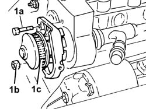
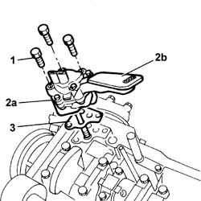
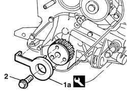
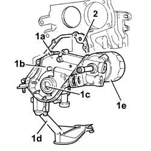
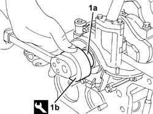
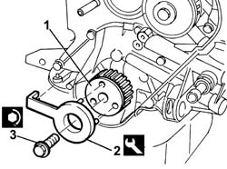

1084B14 engine oil pump - r+r with power unit removed
- Path
- Procedures > 10 ENGINE > 1084 ENGINE LUBRICATION > 1084B ENGINE OIL LUBRICATION CIRCUIT > 1084B14 engine oil pump - r+r with power unit removed
- Kind
- repair procedure (removal / refitting; the operation number is the code)
- Applies to
- all engines; all production periods
- Interactive page
- https://sloeber94.github.io/elrnDB-fDbl/en/#/2585296
Applies to: all engines; all production periods
 Removing
Removing
 Refitting
Refitting1004D40 engine - position on stand and remove
1020A24 crank case oil sump - r + r clean seals for sealant application with engine removed
1. Undo the bolts (1a) and the nut (1b) and remove the water pump (1c).

Applies to: all engines; all production periods
Removing
Refitting1004D40 engine - position on stand and remove
1020A24 crank case oil sump - r + r clean seals for sealant application with engine removed
1. Undo the retaining bolts.
2. Remove the engine oil pump (2a) complete with draught element (2b).
3. Recover the oil pump gasket.

Applies to: all engines; all production periods
1. Fit the crankshaft gear lock (1a) as shown.
 | Name | Country |
|---|---|---|
1a | Counter-torque | 1.870.744.000 |
2. Unscrew the bolt securing the crankshaft gear and remove.

Applies to: all engines; all production periods
Refitting
RemovingReplace the oil pump gasket.
Position the oil pump fitting the drive shaft in its housing.
Tighten the bolts fixing the oil pump to the cylinder block/crankcase to torque.
 | Fastening | Component | Ø | Value (daNm) |
|---|---|---|---|---|
- | Bolt | ENGINE OIL PUMP | M8 | 2.5 |
1020A24 crank case oil sump - r + r clean seals for sealant application with engine removed
Applies to: all engines; all production periods
1. Undo bolts (1a) and remove engine block lower cover (1b) with built-in oil pump, complete with crankshaft lower oil seal(1c), intake duct (1d) and oil filter (1e).
2. Remove engine block lower seal

Applies to: all engines; all production periods
Refitting
RemovingPosition a new gasket on the oil pump.
Fit the crankcase front cover with built in oil pump complete intake housing and oil filter and secure by tightening bolts to the recomended torque.
| Fastening | Component | Ø | Value (daNm) |
|---|---|---|---|---|
- | Bolt | ENGINE OIL PUMP | M6 | 1 |
1. Fit a new crankshaft front cover oil seal (1a) using the tool (1b).
| Name | Country |
|---|---|---|
1b | Fitting tool | 1.860.903.000 |

Applies to: all engines; all production periods
1. Fit the gear on the crankshaft.
2. Fit the crankshaft locking tool.
| Name | Country |
|---|---|---|
2 | Counter-torque | 1.870.744.000 |
3. Secure the crankshaft gear by tightening the bolt to the specified torque.
| Fastening | Component | Ø | Value (daNm) |
|---|---|---|---|---|
3 | Bolt | TOOTHED DRIVE PULLEY | M11 | 2 + 90° |

Applies to: all engines; all production periods
Apply the recommended sealent to the outside edge of the water pump in one continuous line.
 | Type | Component | Name | Qty. |
|---|---|---|---|---|
- | Silicon sealant | COOLANT PUMP | - | - |
Fit the water pump and fix it tightening the nuts and bolts to the recommended torque.
| Fastening | Component | Ø | Value (daNm) |
|---|---|---|---|---|
- | Bolt | COOLANT PUMP | M6 | 1 |
| Fastening | Component | Ø | Value (daNm) |
|---|---|---|---|---|
- | Nut | COOLANT PUMP | M6 x 1 | 0.7 |
1020A24 crank case oil sump - r + r clean seals for sealant application with engine removed
Topics linked from this page (3)
- 1004d10 power unit (manual gearbox), removed, remove and re-build
- 1004D40 engine - position on stand and remove
- 1020A24 crank case oil sump - r + r clean seals for sealant application with engine removed